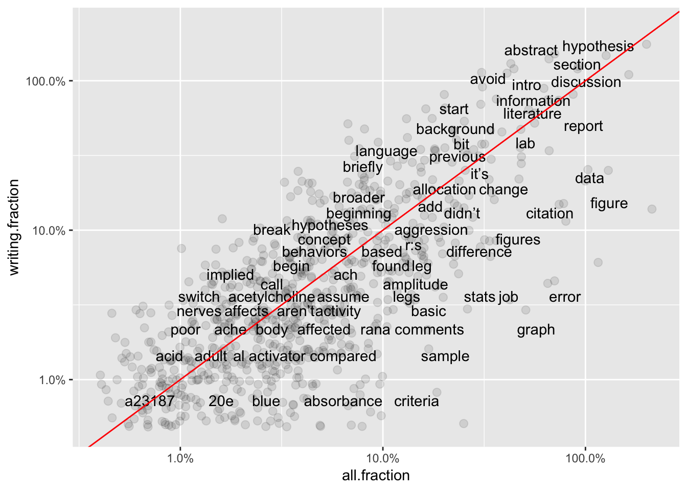
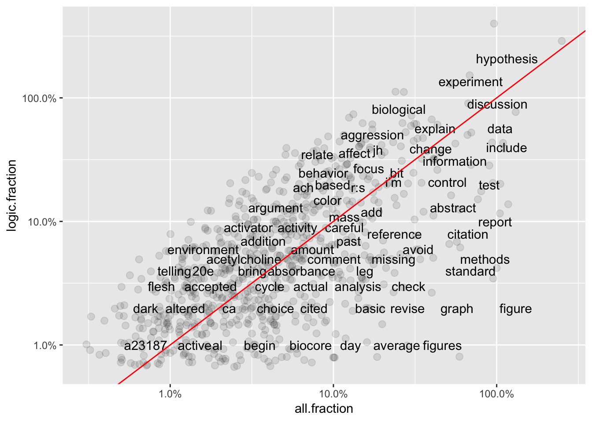
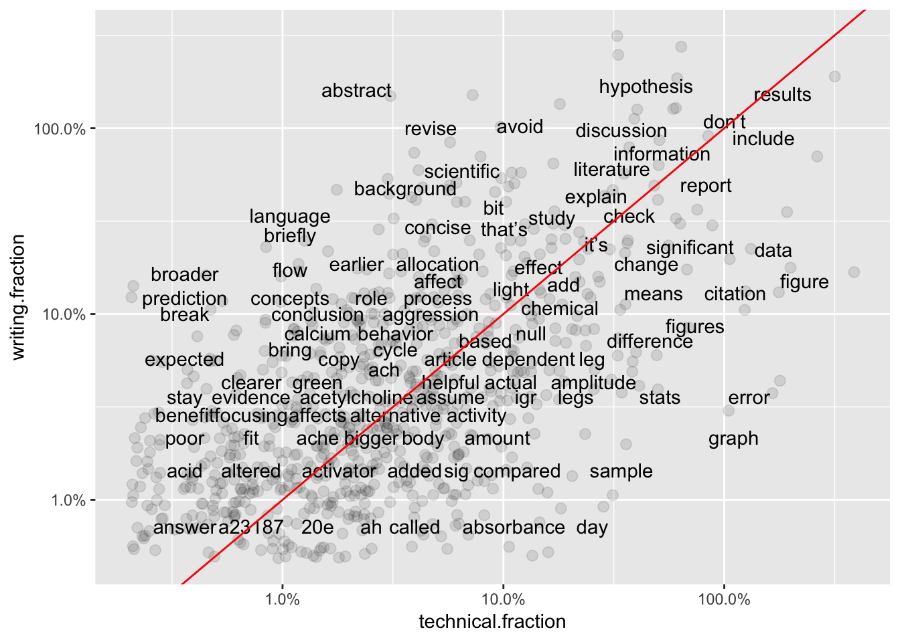
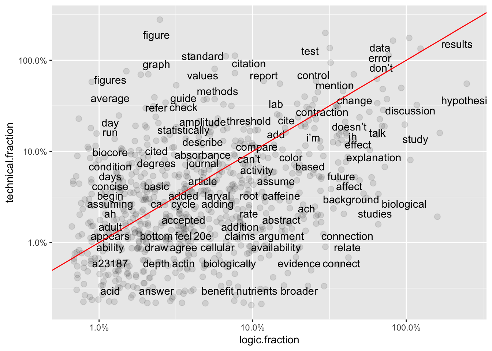
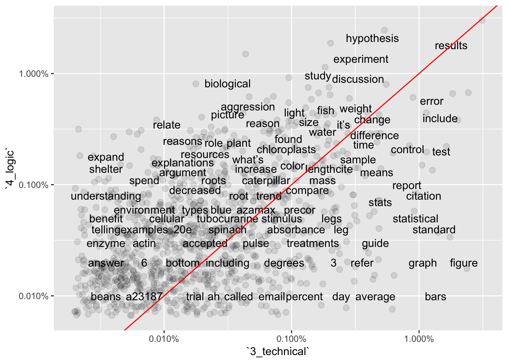
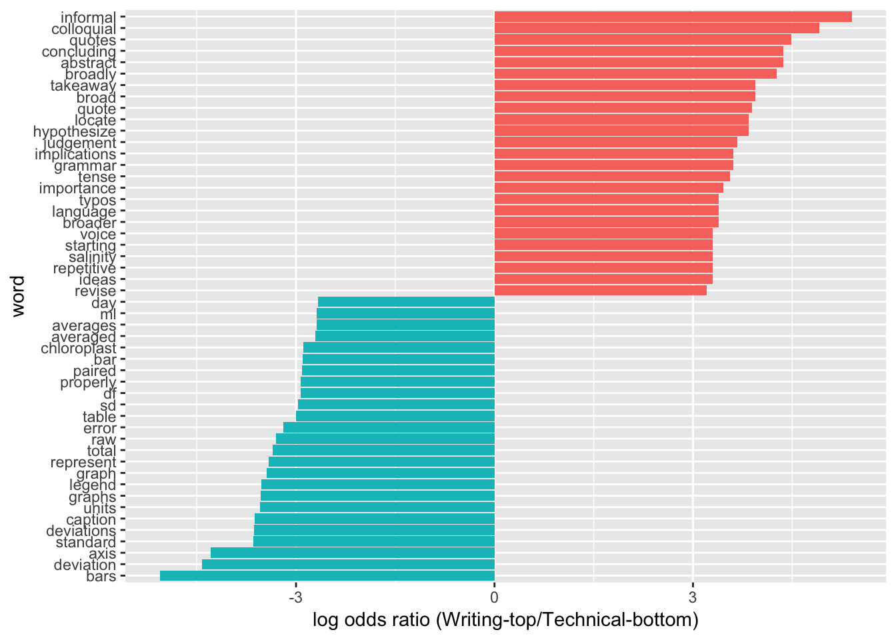
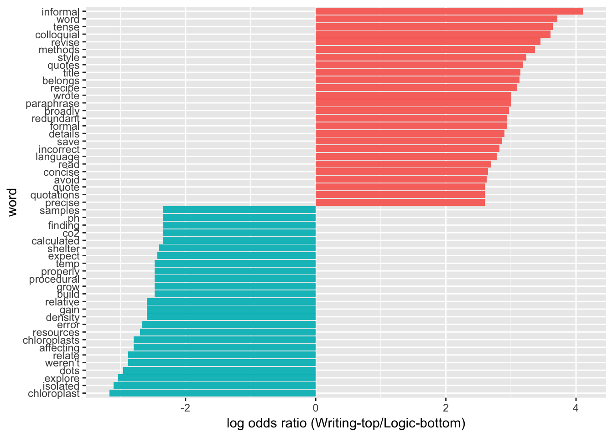

Initial Exploration
Feb 25, 2019
The first question to answer before making deeper comparisons is, are word frequencies different between TAs’ comments from different sub-categories? This page describes the methods used for initial exploration of the TA comments dataset.
Results of these analyses are discussed in depth on this page: https://adanieljohnson.github.io/default_website/findings.html
The Analyses
I ran three different analyses of word use frequency. For simplicity I reduced the analysis to just the four most common comment subjects.
- Pearson correlations for word use frequencies. This method compares the absolute frequencies for words found in ALL of the Subject sub-categories.
- Word frequency differences based on log-odds ratios. This method highlights terms that are the most different between sub-categories. Again, this method compares frequencies for words found in ALL of the Subject sub-categories.
- N-grams mapping (Draft). This method identifies text strings, phrases, and terms that are unique (or nearly unique) to one sub-category. Unlike the other two methods, this one does not drop terms which are missing from one or more groups.
Setup
# Call in tidyverse, other required libraries.
library(tidyverse)
library(tidytext)
library(dplyr)
library(tidyr)
library(ggplot2)
library(scales)
#Read in CSV as a starting dataframe named "base_data".
base_data <- read_csv(file='data/coded_full_comments_dataset_Spring18anonVERB.csv')Pearson Correlations of Word Frequencies
Are Shared Words Used At Different Frequencies?
This analysis takes all comments from base_data, tokenizes and filters stopwords, then counts and sorts fractional frequencies for each word in each category. NOTE: this analysis only compares word use for terms present in ALL sub-categories. If a word is MISSING from any subcategory, the data row for that word is pruned from the dataset. This eliminates all unique words in favor of words found in all sub-categories.
#Tokenize phrases, remove the stop words listed in R's standard reference file.
base_data_tokenized <- base_data %>%
unnest_tokens(word,ta.comment)
#Stopwords removal.
sortedwords.comments.all <- base_data_tokenized %>%
filter(!word %in% stop_words$word,
!word %in% str_remove_all(stop_words$word, "'"),
str_detect(word, "[a-z]")) %>%
count(word, word, sort = TRUE) %>%
ungroup()
#Calculate total # of words
total_words.all <- sortedwords.comments.all %>%
summarize(total = sum(n))
#Calculate then append fractional word frequencies.
sortedwords.comments.all.fraction <- sortedwords.comments.all %>% as_tibble() %>% mutate(
all.fraction = (n*100)/total_words.all$total
)
#Select SUBSETs of tokenized data based on code.subject:
base_data_tokenized.basic <- subset(base_data_tokenized, code.subject == "1_basic", select = (1:28))
base_data_tokenized.writing <- subset(base_data_tokenized, code.subject == "2_writing", select = (1:28))
base_data_tokenized.technical <- subset(base_data_tokenized, code.subject == "3_technical", select = (1:28))
base_data_tokenized.logic <- subset(base_data_tokenized, code.subject == "4_logic", select = (1:28))
#For each subset, filter stopwords, count words and total, then calculate frequencies.
sortedwords.basic <- base_data_tokenized.basic %>%
filter(!word %in% stop_words$word,
!word %in% str_remove_all(stop_words$word, "'"),
str_detect(word, "[a-z]")) %>%
count(word, word, sort = TRUE) %>%
ungroup()
#Calculate the number of words in total in the subset
total_words.basic <- sortedwords.basic %>%
summarize(total = sum(n))
#Mutate table to calculate then append fractional word frequency in the text.
sortedwords.basic.fraction <- sortedwords.basic %>% as_tibble() %>% mutate(
basic.fraction = (n*100)/total_words.basic$total
)
#Repeats for subset 2
sortedwords.writing <- base_data_tokenized.writing %>%
filter(!word %in% stop_words$word,
!word %in% str_remove_all(stop_words$word, "'"),
str_detect(word, "[a-z]")) %>%
count(word, word, sort = TRUE) %>%
ungroup()
total_words.writing <- sortedwords.writing %>%
summarize(total = sum(n))
sortedwords.writing.fraction <- sortedwords.writing %>% as_tibble() %>% mutate(
writing.fraction = (n*100)/total_words.writing$total
)
#Repeats for subset 3
sortedwords.technical <- base_data_tokenized.technical %>%
filter(!word %in% stop_words$word,
!word %in% str_remove_all(stop_words$word, "'"),
str_detect(word, "[a-z]")) %>%
count(word, word, sort = TRUE) %>%
ungroup()
total_words.technical <- sortedwords.technical %>%
summarize(total = sum(n))
sortedwords.technical.fraction <- sortedwords.technical %>% as_tibble() %>% mutate(
technical.fraction = (n*100)/total_words.technical$total
)
#Repeats for subset 4
sortedwords.logic <- base_data_tokenized.logic %>%
filter(!word %in% stop_words$word,
!word %in% str_remove_all(stop_words$word, "'"),
str_detect(word, "[a-z]")) %>%
count(word, word, sort = TRUE) %>%
ungroup()
total_words.logic <- sortedwords.logic %>%
summarize(total = sum(n))
sortedwords.logic.fraction <- sortedwords.logic %>% as_tibble() %>% mutate(
logic.fraction = (n*100)/total_words.logic$total
)The next block joins the individual data tables for each subset in a larger file using column named ‘word’. Columns get confusing names so they are renamed. The graphs compare frequencies for ~770 words that appear in ALL three sub-categories: Writing, Technical, and Logic.
Graphs 1-3 show frequencies in individual groups versus word frequency overall. Generally, frequency of terms in the whole set of comments should be similar to frequency in an individual group (X vs Y positions similar.) However, some terms associated with Logic subgroup (Graph 3) are far from the best-fit line, suggesting they are under-used for comments in that sub-category.
Graphs 4-6 show pair-wise comparisons between sub-categories. Unlike overall frequency, most words are NOT clustered along the best-fit line, suggesting there is still more variation in word use between sub-categories.
total <- merge(sortedwords.comments.all.fraction,sortedwords.technical.fraction,by="word")
total2 <- merge(total,sortedwords.writing.fraction,by="word")
total3 <- merge(total2,sortedwords.logic.fraction,by="word")
#rename lines that were possibly confusing
names(total3)[2] <- "all.count"
names(total3)[4] <- "technical.count"
names(total3)[6] <- "writing.count"
names(total3)[8] <- "logic.count"
#Mutate table to calculate then append fractional word frequency in the text.
total4 <- total3 %>% as_tibble() %>% mutate(
writing.wt = (writing.count *100)/all.count
)
total5 <- total4 %>% as_tibble() %>% mutate(
technical.wt = (technical.count *100)/all.count
)
total6 <- total5 %>% as_tibble() %>% mutate(
logic.wt = (logic.count *100)/all.count
)
#Plot graphs
ggplot(total6, aes(`all.fraction`,`writing.fraction`)) +
geom_jitter(alpha = 0.1, size = 2.5, width = 0.25, height = 0.25) +
geom_text(aes(label = word), check_overlap = TRUE, vjust = 1.5) +
scale_x_log10(labels = percent_format()) +
scale_y_log10(labels = percent_format()) +
geom_abline(color = "red")
ggplot(total6, aes(`all.fraction`,`technical.fraction`)) +
geom_jitter(alpha = 0.1, size = 2.5, width = 0.25, height = 0.25) +
geom_text(aes(label = word), check_overlap = TRUE, vjust = 1.5) +
scale_x_log10(labels = percent_format()) +
scale_y_log10(labels = percent_format()) +
geom_abline(color = "red")
ggplot(total6, aes(`all.fraction`,`logic.fraction`)) +
geom_jitter(alpha = 0.1, size = 2.5, width = 0.25, height = 0.25) +
geom_text(aes(label = word), check_overlap = TRUE, vjust = 1.5) +
scale_x_log10(labels = percent_format()) +
scale_y_log10(labels = percent_format()) +
geom_abline(color = "red")
ggplot(total6, aes(`technical.fraction`,`writing.fraction`)) +
geom_jitter(alpha = 0.1, size = 2.5, width = 0.25, height = 0.25) +
geom_text(aes(label = word), check_overlap = TRUE, vjust = 1.5) +
scale_x_log10(labels = percent_format()) +
scale_y_log10(labels = percent_format()) +
geom_abline(color = "red")
ggplot(total6, aes(`logic.fraction`,`writing.fraction`)) +
geom_jitter(alpha = 0.1, size = 2.5, width = 0.25, height = 0.25) +
geom_text(aes(label = word), check_overlap = TRUE, vjust = 1.5) +
scale_x_log10(labels = percent_format()) +
scale_y_log10(labels = percent_format()) +
geom_abline(color = "red")ggplot(total6, aes(`logic.fraction`,`technical.fraction`)) +
geom_jitter(alpha = 0.1, size = 2.5, width = 0.25, height = 0.25) +
geom_text(aes(label = word), check_overlap = TRUE, vjust = 1.5) +
scale_x_log10(labels = percent_format()) +
scale_y_log10(labels = percent_format()) +
geom_abline(color = "red")
Log-Odds Ratios of Word Frequencies
Which Words Are Shared LEAST Between Categories?
Log-odds ratio comparison identifies the words that have the greatest difference in usage between the two groups being compared. This code block is based on a method for comparing word usage frequencies between two separate Twitter users https://www.tidytextmining.com/twitter.html If the words used by TAs in their comments differ between sub-categories, there should be fairly low Pearson correlations between word frequencies.
# Isolate table rows to compare. Then reduce larger dataframe to only 2 required columns of data.
frequency_writing <- filter(base_data, code.subject=="2_writing"|code.subject=="3_technical"|code.subject=="4_logic")
frequency_writing.subcolumns <- frequency_writing %>% select(1, 22:23)
# Tokenize phrases, remove stop words listed in standard reference file.
base_data_tokenized <- frequency_writing.subcolumns %>%
unnest_tokens(word,ta.comment) %>%
anti_join(stop_words)
#At this point the dataframe should have "Unique.Record" in column 1, "code.subject" in column 2, and the unnested "word" in column 3. All columns are class = "character". Stop words listed in the "stop_words" R reference data file have been removed.
#Block below re-organizes the data for comparisons. This pattern sets "2_writing" as the first dataset, then all other data in remaining columns.
#Groups by code.subject, calculated proportional frequency in each group.
#Final step creates 4 columns: word, 2_writing, code.subject, proportion
#Stats need this format to be able to compare 2_writing against other values.
base_data_tokenized_sorted2 <- base_data_tokenized %>%
group_by(code.subject) %>%
count(code.subject, word, sort=TRUE) %>%
mutate(proportion = n / sum(n)) %>%
select(-n) %>%
spread(code.subject, proportion) %>%
gather(code.subject, proportion, `3_technical`:`4_logic`)
#The dataframe called "base_data_tokenized_sorted2" is the final 4-column dataframe for statistical analysis. Individual words are in column 1, "2_writing" frequency is in Column 2, "code.subject" is in column 3, and "proportion" is in column 4. Columns 1 and 3 are class = "character", 2 and 4 are numeric ranges.
#This structure is needed in order to compare word (in Column 1) frequencies for 2. Writing Quality (Column 2) as Y values against the frequencies of those same words (in Column 4) as X axes. WHICH subset of X values to use is coded in Column 3.
#Pearson correlation between frequency of words in 2_writing versus 3_technical and 2_writing versus 4_logic sub-categories.
cor.test(data = base_data_tokenized_sorted2[base_data_tokenized_sorted2$code.subject == "3_technical",],
~ proportion + `2_writing`)##
## Pearson's product-moment correlation
##
## data: proportion and 2_writing
## t = 15.153, df = 1176, p-value < 2.2e-16
## alternative hypothesis: true correlation is not equal to 0
## 95 percent confidence interval:
## 0.3552491 0.4508720
## sample estimates:
## cor
## 0.4041642cor.test(data = base_data_tokenized_sorted2[base_data_tokenized_sorted2$code.subject == "4_logic",],
~ proportion + `2_writing`)##
## Pearson's product-moment correlation
##
## data: proportion and 2_writing
## t = 20.759, df = 946, p-value < 2.2e-16
## alternative hypothesis: true correlation is not equal to 0
## 95 percent confidence interval:
## 0.5140770 0.6016765
## sample estimates:
## cor
## 0.5594369coroutput23 <-cor.test(data = base_data_tokenized_sorted2[base_data_tokenized_sorted2$code.subject == "3_technical",],
~ proportion + `2_writing`)
coroutput24 <-cor.test(data = base_data_tokenized_sorted2[base_data_tokenized_sorted2$code.subject == "4_logic",],
~ proportion + `2_writing`)
#Comparing sub-groups 3_technical and 4_logic requires recreating the dataframe in a slightly different format that excludes the data rows for 2_writing.
# Isolate table rows to compare. Then reduce larger dataframe to only 2 required columns of data.
frequency_writing3 <- filter(base_data, code.subject=="3_technical"|code.subject=="4_logic")
frequency_writing.subcolumns3 <- frequency_writing3 %>% select(1, 22:23)
# Tokenize phrases, remove stop words listed in standard reference file.
base_data_tokenized3 <- frequency_writing.subcolumns3 %>%
unnest_tokens(word,ta.comment) %>%
anti_join(stop_words)
#At this point the dataframe should have "Unique.Record" in column 1, "code.subject" in column 2, and the unnested "word" in column 3. All columns are class = "character". Stop words listed in the "stop_words" R reference data file have been removed.
#Block below re-organizes the data for comparisons. This pattern sets "3_technical" as the first dataset, then all other data in remaining columns.
#Groups by code.subject, calculated proportional frequency in each group.
#Final step creates 4 columns: word, 3_technical, code.subject, proportion
#Stats need this format to be able to compare 3_technical against other values.
base_data_tokenized_sorted3 <- base_data_tokenized3 %>%
group_by(code.subject) %>%
count(code.subject, word, sort=TRUE) %>%
mutate(proportion = n / sum(n)) %>%
select(-n) %>%
spread(code.subject, proportion) %>%
gather(code.subject, proportion,`4_logic`)
#The dataframe called "base_data_tokenized_sorted3" is the final 4-column dataframe for statistical analysis. Individual words are in column 1, "3_technical" frequency is in Column 2, "code.subject" is in column 3, and "proportion" is in column 4. Columns 1 and 3 are class = "character", 2 and 4 are numeric ranges.
#This structure is needed in order to compare word (in Column 1) frequencies for 3_technical (Column 2) as Y values against the frequencies of those same words (in Column 4) as X axes. WHICH subset of X values to use is coded in Column 3.
#Pearson correlation** between the frequency of words in 3_technical versus 4_logic sub-categories.
coroutput34 <-cor.test(data = base_data_tokenized_sorted3[base_data_tokenized_sorted3$code.subject == "4_logic",],
~ proportion + `3_technical`)
broom::tidy(coroutput23)broom::tidy(coroutput24)broom::tidy(coroutput34)Visualizing Frequency Differences Between Sub-Categories
#Create groups by code.subject, calculates proportional frequency in each group.
#Final step creates 5 columns: code.subject, n, word, total, frequency.
base_data_tokenized_sorted2 <- base_data_tokenized %>%
group_by(code.subject) %>%
count(code.subject, word, sort=TRUE) %>%
left_join(base_data_tokenized %>%
group_by(code.subject) %>%
summarise(total = n())) %>%
mutate(freq = n/total)
base_data_tokenized_sorted2v3 <- base_data_tokenized_sorted2 %>%
select(code.subject, word, freq) %>%
spread(code.subject, freq) %>%
arrange(`2_writing`,`3_technical`)
ggplot(base_data_tokenized_sorted2v3, aes(`2_writing`,`3_technical`)) +
geom_jitter(alpha = 0.1, size = 2.5, width = 0.25, height = 0.25) +
geom_text(aes(label = word), check_overlap = TRUE, vjust = 1.5) +
scale_x_log10(labels = percent_format()) +
scale_y_log10(labels = percent_format()) +
geom_abline(color = "red")
#ggsave("Freqplot_3vs2.png", width = 10, height = 6)
#Comparing 2 vs. 4.
base_data_tokenized_sorted2v4 <- base_data_tokenized_sorted2 %>%
select(code.subject, word, freq) %>%
spread(code.subject, freq) %>%
arrange(`2_writing`,`4_logic`)
ggplot(base_data_tokenized_sorted2v3, aes(`2_writing`,`4_logic`)) +
geom_jitter(alpha = 0.1, size = 2.5, width = 0.25, height = 0.25) +
geom_text(aes(label = word), check_overlap = TRUE, vjust = 1.5) +
scale_x_log10(labels = percent_format()) +
scale_y_log10(labels = percent_format()) +
geom_abline(color = "red") #ggsave("Freqplot_4vs2.png", width = 10, height = 6)
#Create groups by code.subject, calculates proportional frequency in each group.
#Final step creates 5 columns: code.subject, n, word, total, frequency.
base_data_tokenized_sorted3 <- base_data_tokenized %>%
group_by(code.subject) %>%
count(code.subject, word, sort=TRUE) %>%
left_join(base_data_tokenized %>%
group_by(code.subject) %>%
summarise(total = n())) %>%
mutate(freq = n/total)
#Set up comparison for 3 vs. 4.
base_data_tokenized_sorted3v4 <- base_data_tokenized_sorted3 %>%
select(code.subject, word, freq) %>%
spread(code.subject, freq) %>%
arrange(`2_writing`,`4_logic`)
ggplot(base_data_tokenized_sorted3v4, aes(`3_technical`,`4_logic`)) +
geom_jitter(alpha = 0.1, size = 2.5, width = 0.25, height = 0.25) +
geom_text(aes(label = word), check_overlap = TRUE, vjust = 1.5) +
scale_x_log10(labels = percent_format()) +
scale_y_log10(labels = percent_format()) +
geom_abline(color = "red")
#ggsave("Freqplot_4vs3.png", width = 10, height = 6)Calculating and Plotting Log-Odds Pairs for Subject Sub-Categories
word_ratios2v3 <- base_data_tokenized %>%
count(word, code.subject) %>%
group_by(word) %>%
filter(sum(n) >= 10) %>%
ungroup() %>%
spread(code.subject, n, fill = 0) %>%
mutate_if(is.numeric, funs((. + 1) / (sum(.) + 1))) %>%
mutate(logratio = log(`2_writing`/`3_technical`)) %>%
arrange(desc(logratio))
word_ratios3v4 <- base_data_tokenized %>%
count(word, code.subject) %>%
group_by(word) %>%
filter(sum(n) >= 10) %>%
ungroup() %>%
spread(code.subject, n, fill = 0) %>%
mutate_if(is.numeric, funs((. + 1) / (sum(.) + 1))) %>%
mutate(logratio = log(`3_technical`/`4_logic`)) %>%
arrange(desc(logratio))
word_ratios2v4 <- base_data_tokenized %>%
count(word, code.subject) %>%
group_by(word) %>%
filter(sum(n) >= 10) %>%
ungroup() %>%
spread(code.subject, n, fill = 0) %>%
mutate_if(is.numeric, funs((. + 1) / (sum(.) + 1))) %>%
mutate(logratio = log(`2_writing`/`4_logic`)) %>%
arrange(desc(logratio))
word_ratios2v3 %>%
arrange(abs(logratio))word_ratios3v4 %>%
arrange(abs(logratio))word_ratios2v4 %>%
arrange(abs(logratio))word_ratios2v3 %>%
group_by(logratio < 0) %>%
top_n(25, abs(logratio)) %>%
ungroup() %>%
mutate(word = reorder(word, logratio)) %>%
ggplot(aes(word, logratio, fill = logratio < 0)) +
geom_col(show.legend = FALSE) +
coord_flip() +
ylab("log odds ratio (Writing-top/Technical-bottom)") +
scale_fill_discrete(name = "", labels = c("2_writing", "3_technical"))
#ggsave("Logplot_2vs3.png", width = 6, height = 10)
word_ratios3v4 %>%
group_by(logratio < 0) %>%
top_n(25, abs(logratio)) %>%
ungroup() %>%
mutate(word = reorder(word, logratio)) %>%
ggplot(aes(word, logratio, fill = logratio < 0)) +
geom_col(show.legend = FALSE) +
coord_flip() +
ylab("log odds ratio (Technical-top/Logic-bottom)") +
scale_fill_discrete(name = "", labels = c("3_technical","4_logic")) #ggsave("Logplot_3vs4.png", width = 6, height = 10)
word_ratios2v4 %>%
group_by(logratio < 0) %>%
top_n(25, abs(logratio)) %>%
ungroup() %>%
mutate(word = reorder(word, logratio)) %>%
ggplot(aes(word, logratio, fill = logratio < 0)) +
geom_col(show.legend = FALSE) +
coord_flip() +
ylab("log odds ratio (Writing-top/Logic-bottom)") +
scale_fill_discrete(name = "", labels = c("2_writing", "4_logic"))
#ggsave("Logplot_2vs4.png", width = 6, height = 10)N-Grams Mapping
Are Certain Terms and Phrases Unique to One Sub-Category?
One of our earliest observations was that the n-gram “basic criteria” only appeared in TA comments from three different Subject sub-categories. Of these, the phrase made up <0.5% of comments in two categories, but in the third category, “basic criteria” made up >5% of all comments. This suggests that the “basic criteria” n-gram is essentially diagnostic for that sub-category. This suggests other terms and n-grams that are eliminated in the previous two methods may be equally diagnostic for one sub-category.
The block below describes a pseudo-code approach.
Import comments
Tokenize the comments as 1-, 2, 3-grams
Add counts within subset, calculate frequency
Split by subcategory
Align 4 subcategories, highest to lowest
# Call in tidyverse, other required libraries.
library(tidyverse)
library(tidytext)
library(dplyr)
library(tidyr)
library(ggplot2)
library(scales)
#Read in CSV as a starting dataframe named "base_data".
base_data <- read_csv(file='data/coded_full_comments_dataset_Spring18anonVERB.csv')#Tokenize phrases as N-grams.
base_data_tokenized2n <- base_data %>%
unnest_tokens(ngram, ta.comment, token="ngrams", n=2)
sortedwords.comments.all2n <- base_data_tokenized2n %>%
count(ngram, sort = TRUE) %>%
ungroup()
total_words.all2n <- sortedwords.comments.all2n %>%
summarize(total = sum(n))
sortedwords.comments.all.fraction2n <- sortedwords.comments.all2n %>% as_tibble() %>% mutate(
all.fraction = (n*100)/total_words.all2n$total
)
#Select SUBSETs of tokenized data based on code.subject:
base_data_tokenized.basic2n <- subset(base_data_tokenized2n, code.subject == "1_basic", select = (1:28))
base_data_tokenized.writing2n <- subset(base_data_tokenized2n, code.subject == "2_writing", select = (1:28))
base_data_tokenized.technical2n <- subset(base_data_tokenized2n, code.subject == "3_technical", select = (1:28))
base_data_tokenized.logic2n <- subset(base_data_tokenized2n, code.subject == "4_logic", select = (1:28))
#For each subset, filter stopwords, count words and total, then calculate frequencies.
sortedwords.basic2n <- base_data_tokenized.basic2n %>%
count(ngram, sort = TRUE) %>%
ungroup()
#Calculate the number of words in total in the subset
total_words.basic2n <- sortedwords.basic2n %>%
summarize(total = sum(n))
#Mutate table to calculate then append fractional word frequency in the text.
sortedwords.basic.fraction2n <- sortedwords.basic2n %>% as_tibble() %>% mutate(
basic.fraction2n = (n*100)/total_words.basic2n$total
)
#Repeats for subset 2
#For each subset, filter stopwords, count words and total, then calculate frequencies.
sortedwords.writing2n <- base_data_tokenized.writing2n %>%
count(ngram, sort = TRUE) %>%
ungroup()
#Calculate the number of words in total in the subset
total_words.writing2n <- sortedwords.writing2n %>%
summarize(total = sum(n))
#Mutate table to calculate then append fractional word frequency in the text.
sortedwords.writing.fraction2n <- sortedwords.writing2n %>% as_tibble() %>% mutate(
writing.fraction2n = (n*100)/total_words.writing2n$total
)
#Repeats for subset 3
#For each subset, filter stopwords, count words and total, then calculate frequencies.
sortedwords.technical2n <- base_data_tokenized.technical2n %>%
count(ngram, sort = TRUE) %>%
ungroup()
#Calculate the number of words in total in the subset
total_words.technical2n <- sortedwords.technical2n %>%
summarize(total = sum(n))
#Mutate table to calculate then append fractional word frequency in the text.
sortedwords.technical.fraction2n <- sortedwords.technical2n %>% as_tibble() %>% mutate(
technical.fraction2n = (n*100)/total_words.technical2n$total
)
#Repeats for subset 4
#For each subset, filter stopwords, count words and total, then calculate frequencies.
sortedwords.logic2n <- base_data_tokenized.logic2n %>%
count(ngram, sort = TRUE) %>%
ungroup()
#Calculate the number of words in total in the subset
total_words.logic2n <- sortedwords.logic2n %>%
summarize(total = sum(n))
#Mutate table to calculate then append fractional word frequency in the text.
sortedwords.logic.fraction2n <- sortedwords.logic2n %>% as_tibble() %>% mutate(
logic.fraction2n = (n*100)/total_words.logic2n$total
)Copyright © 2018 A. Daniel Johnson. All rights reserved.